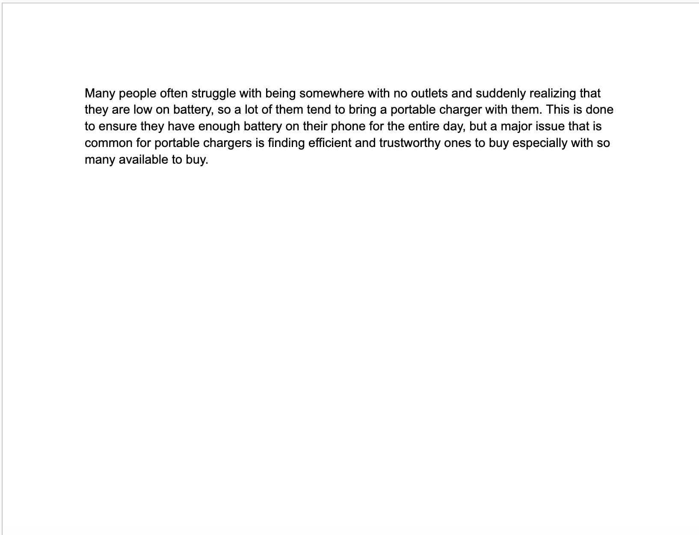

Problem Statement

Many people often struggle with being somewhere with no outlets and suddenly realizing that they are low on battery, so a lot of them tend to bring a portable charger with them. This is done to ensure they have enough battery on their phone for the entire day, but a major issue that is common for portable chargers is finding efficient and trustworthy ones to buy especially with so many available to buy.
Affinity Diagram

The five categories that were determined to be important were How to Get, Desired Factors, Websites to Post to, Control, and Type of Post.
Sketches

A sketch of the process the user will go through to login/create an account, search for a desired portable charger, and add that charger to cart and purchase it.
Marvin Million |
Chapin, Sc | 803-000-0000 email@gmail.com |
Education |
University of South Carolina B.S. in Computer Science, 2029 |
Relevant Experiance |
Chick-Fil-A - Back of House Worker April 2024 - Present
June 2023 - Augsust 2023
|
Skills |
|